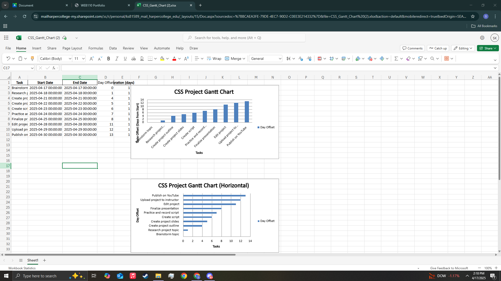

In Assignment 13, we learned about project management. I have studied project management before in another class. That class was a graphic design class; however, many of the principles remained the same. For example, having a plan outlining the steps needed to complete the project. For this assignment, I learned about Gantt charts, which I was unfamiliar with. In the graphic design class, we used a workflow chart instead. I have to say I prefer the workflow chart because it shows how the project progresses through each step to completion. However, the ability to add task dependencies is an added benefit of the Gantt chart. Dependencies show what must be completed first for the project to continue. I think in a more professional environment, I can see a Gantt chart coming in very handy.
